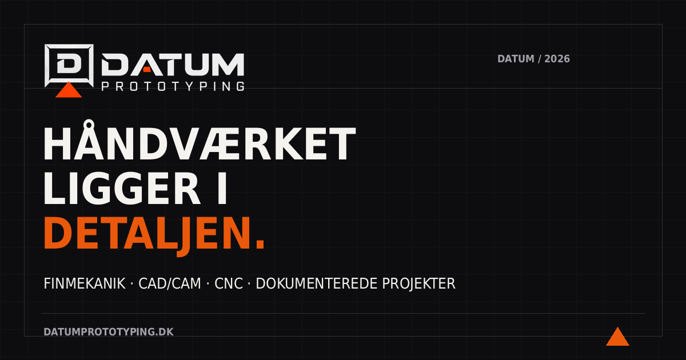
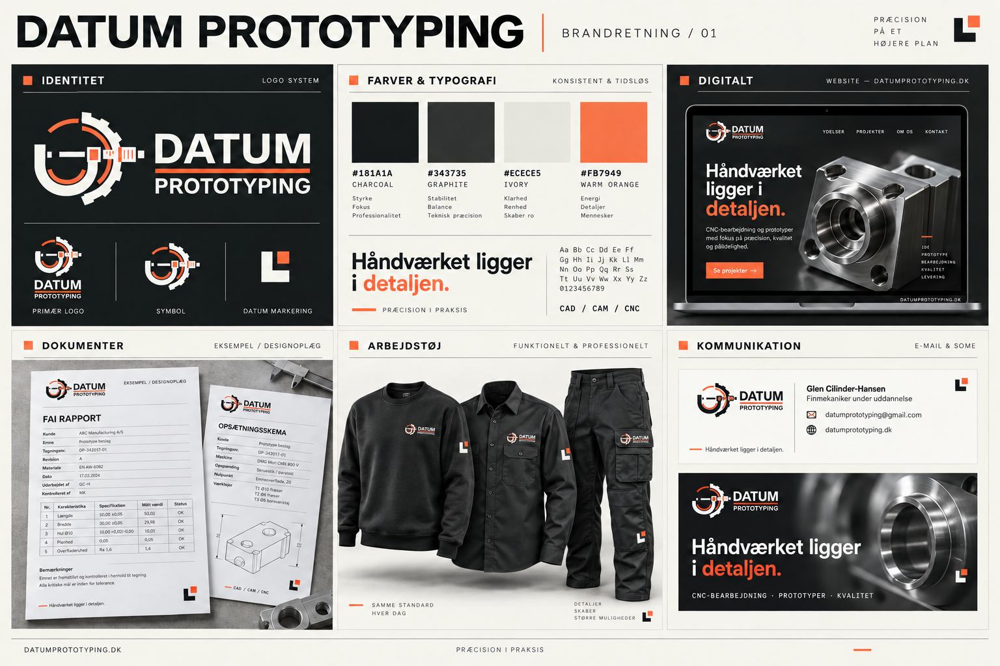

DATUM PROTOTYPING / BRAND 01
Håndværket ligger
i detaljen.
Originalfiler og anvendelser i én sammenhængende identitet.
Datummarkering
Et referencehjørne med en orange markering. Et supplement til det eksisterende logo.
Kommunikation


Visuel retning

Konceptillustration; brug filerne i pakken som originaler.
Brug og filoversigt